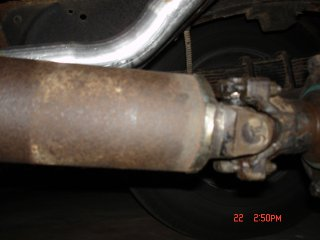

I might note here, I also used the speedometer cable from the donor truck. I was able to pull the "speedometer head" end from the donor cable housing, then I removed the "speedometer head" end from my original cable ( slight amount of heat from a butane torch will help here). After the end was removed, (with it on end) I heated it slightly and drove a rod (or bolt) in it to expand the original crimp. I then simply put it on the cable housing from the donor and re-crimped it...... worked like a charm.

For my driveshaft, again I used the one from the donor truck.... it naturally fit the c-4 tranny, and it was the same diameter as my '59 driveshaft. With a hacksaw, I sawed in about 1/16" all the way around edge of the rear weld on my original shaft to remove the yoke I needed for the new shaft, measured the length I need the new one to be, cut the donor shaft, inserted the yoke ( the yokes have a shoulder that slips inside the driveshaft about 1/4"-1/2" inch) and welded it in place.